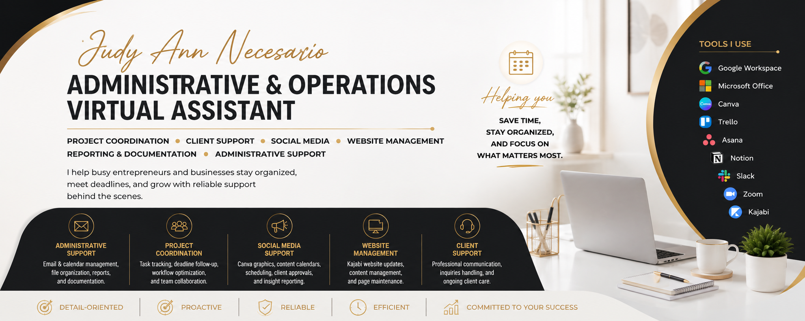

Portfolio

Professional Brand Banner
Canva Project
Social Media Graphics
Kajabi
Website Management
Reports

Based in Cebu City, Philippines, I bring over 5+ years of professional experience across remote client support, project coordination, administrative leadership, and tech operations. Holding a degree in Computer and Communication Engineering, I blend technical expertise with sharp organizational skills to streamline workflows, manage tools, and help remote businesses run seamlessly.
Email, calendar, reports, and file management.
Task tracking and workflow optimization.
Content scheduling and Canva graphics.
Kajabi updates and content management.
Professional communication and inquiries.
Reports and organized business records.
Building a professional online presence and showcasing projects.
Project coordination, documentation, and client communication.
Helping teams stay organized and productive.
Email: necesariojudyann5@gmail.com
LinkedIn: Add your LinkedIn profile URL here